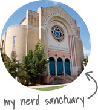
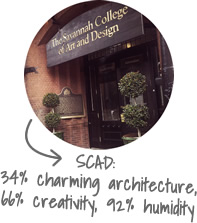
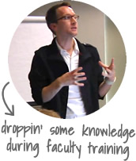

Our story begins on a farm near Birmingham, Alabama where a pasty young bookworm stands knee-deep in horse manure...
Our story begins on a farm near Birmingham, Alabama where a pasty young bookworm stands knee-deep in horse manure...
I was 11 when my family moved from a duplex in Pennsylvania with a yard the size of a postage stamp to a farm in the Deep South. It was a fish-out-of-water story begging to be made into an ABC Family sitcom. I frequently fantasized that a loving pair of English professors would wander by the farm, recognize that I was far too well-read to be mucking stalls, and whisk me away to a home with a proper library where I could read The Bell Jar by the dappled light of a leaded-glass window.
Around my 15th birthday, I heard tales of a place too wondrous to be real: a taxpayer-funded boarding school where 300 of Alabama’s nerdiest teenagers roamed free. Courses were taught by brilliant, passionate faculty! Classrooms were furnished with the latest technologies! The cafeteria had unlimited, no-bake cheesecake!
The next two years at the Alabama School of Math and Science changed my life. I learned chemistry and physics from PhDs who moonlighted as college professors. My awful poetry became slightly less awful and I designed my first website. (It was also awful, but it was the ‘90s, so no one noticed.) I was surrounded by anime addicts and RPG aficionados and pink-haired theater kids and I loved every minute of it.
After boarding school, I attended the University of Alabama and spent semesters in France and Germany. While working at UA’s Center for Public Television, I gained a new appreciation for the wonders of educational technology. When I wasn't setting up video shoots for documentaries, I was modernizing the Center’s website, which housed a wealth of resources for teachers.
With B.A. in hand, I was soon living the dream of anyone with a double major in Communication and French: building websites about pest control for a small ad agency. Leaving the money and glamour of termite-related advertising wasn't easy, but I eventually enrolled in an MFA program at the Savannah College of Art and Design with dreams of becoming the kind of passionate, caring teacher I'd always admired. In 2003, I took a course in instructional-media design and my work caught the eye of SCAD's new Director of eLearning. I spent the next three years helping build SCAD's award-winning distance education programs and learning everything I could about instructional design.
In 2006, I moved to Chicago and began working at DePaul University where I now help faculty make the transition to hybrid and online instruction. These days, my Southern accent rarely emerges, but I haven’t forgotten where I came from. I’m still the same, simple farm boy with dreams of a better world—a world where we can all read open-source ebooks and complete thoughtfully designed MOOC assignments by the dappled light of a leaded-glass window.